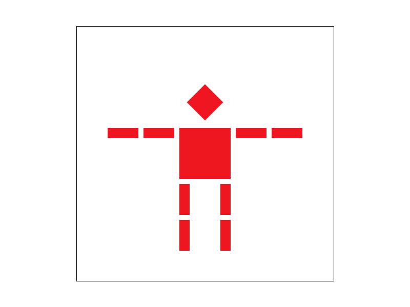

INT3403: Computer Graphics
Project 1: Rasterizer
Lê Vũ Quang. 19020020
Overview
Homework liên quan tới các phép biến đổi và hệ tọa độ trung tâm (barycentric coordinate).
Week 3
Task 3: Phép biến đổi
|

Hình robot (transforms)
|
Task 4: Hệ tọa độ trung tâm (barycentric coordinate)